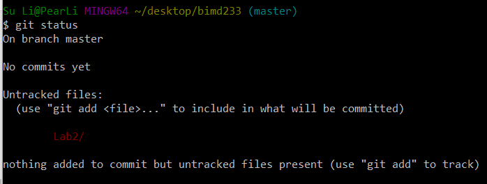

Overview
GIT is a tool that helps you manage your code and files. Think about GIT as a Cloud Drive for your code. It also helps you with code version control, meaning that if you ever run into a situation to go back the previous versions of your code, GIT will allow you to do so. In many tech industries, people use GIT because it allows multiple team members to work on the same projects without interfering each other, also maintaining the major version of the project. If you are interested in learning to use GIT in a team environment, read more about branching on GIT.
In this class We will be using GIT as a main tool to help us create and manage web files on the student website. You can learn other gateways here
Be sure to check out other resources from Github here.
The quick Git Guide shows the essential commands and process, it can be found on canvas.
In this class, you will be seeing at least 3 copies of 1 repository.
1) On your hosting service (Bitbucket), where it stores all the up to date code and files.
2) You workspace computer, where you will do all your coding with tools of your choice.
3) On your student web server, where your files will be hosting at so they are viewable as web pages.
GIT terms
Here are the essential terms we will be using a lot here. There are other that are often used in a workplace(stash, branch, fetch, merge, branch). Do some research and experiment with them :).
Git Bash/OS Terminal commands
Set up GIT
1) Install GIT: https://git-scm.com/download on your computer
(Mac: make sure you allow the installer to run in System Preferences-Security & Privacy)
2) Create a BitBucket account: https://bitbucket.org/
After GIT installation, GIT Bash will also be installed, it comes with SSH(secure shell, protocol for file transfer) which we will be using to do student web publishing.
When using GIT Bash, be sure to hit ENTER to execute a command line.
(Mac: can use Terminal instead of GIT Bash)

Set up Student Web Service
https://uwnetid.washington.edu/manage/1) Go to Manage UW NetID Account
(OR Login to myUW, look to the left, go to UW Resources→Manage UW NetID Account)
2) Go to Computing Services, check Student Web Publishing, then click Subscribe
You should be able to access the index page of your student website through using the link http://students.washington.edu/yourNetID
Possible Solutions
▷ I don't have a repository set up on my current computer.
Create one on Bitbucket and then clone the repository on your computer
▷ I have a repository on a school computer and I also want one on my other computer.
Make sure you have pushed your changes on the school computer. Then clone the repository on your computer
▷ I have finished my lab files, what now?
Push them to your remote repository to keep things updated.
▷ I used the school computer to do my labs and pushed the files, but I don't see them in the repository in my own computer.
If you already have the repository, pull the files in your repository from your computer.
▷ I don't have the lab files or anything on my website.
Make sure you have subscribed to Student Web Service.
Clone the repository on your student web server.
▷ My remote repository has all my latest lab files, but my website does not.
Log in to your student web server and pull in the changes from the repository.
Create Repository
Go to your BitBucket home page, and find the options to create a new repository


Clone Repository
Cloning an existing repository from your Bitbucket account to your local machine allows you to place files and update to remote repository easily.
You only need to clone your repository ONCE per computer
1) Open GIT Bash or terminal (Mac users)
2) Use cd desktop to locate yourself to your desktop.The command cd stands for "change directory", which allows you to change your current location.
notice the yellow text  indicates your current location.
indicates your current location.
3) Copy the GIT link of your repository (NOT website link). You can find the repository link in your repository page:


NOTE: I recommend you to copy a HTTPS link if you have not set up a SSH key.
HTTPS link format: https://yourUsername@bitbucket.org/yourUsername/repositoryName>
4) Use git clone with your repository link to create a local repository on your computer.

NOTE: It might prompt you for BitBucket password, if so enter your BitBucket password(you won't be able to see it on screen).
There should be a folder named "bimd233" created on your desktop, make sure all your BIMD233 lab files go in this folder.
Push Files to Remote Repository
After you finished or made changes to your lab files, you would want to push the files to your remote repository which will update your cloud files with the latest versions.
1) Open GIT Bash or terminal (Mac users). Depend on where your repository is cloned, navigate to your local repository.
In this case, we are usng cd desktop/bimd233
You should be able to see something similar to this
 , the blue text
, the blue text  indicates that the folder is a GIT repository.
indicates that the folder is a GIT repository.
2) This is not required, but you can use git status to check the current status of your repository.
^^^git status is telling me that GIT has tracked that I have new files in the folder, but not added to prepare a push to my remote repository.
3) Use the followiing commands in the listed order to prepare a push to the remote repository:
git add . or git add -A or git add fileName(for a specific file): stages all files to prepare a commit
git commit -m "commit message": Commit files to prepare for push, make your commit message meaningful so you can trace back to older version files easily
git push: push the changes to local repository to your remote repository, this will add the new files or changes to files up to your remote repository.
NOTE: It might prompt you for BitBucket password, if so enter your BitBucket password(you won't be able to see it on screen).

Pull Files From Remote Repository
Pulling changes from remote repository will make sure your local repository is up to date with the latest version of the files.
1) Open GIT Bash or terminal (Mac users). Depend on where your repository is cloned, navigate to your local repository.
In this case, we are still usng cd desktop/bimd233
2) Use git pull. After the pulling process is finished, your files in your local repository folder should be updated and synced with the versions on your remote repository on BitBucket.
NOTE: It might prompt you for BitBucket password, if so enter your BitBucket password(you won't be able to see it on screen).
Log into your student website
1) In GIT Bash or terminal (Mac users)
use ssh yourNetID@vergil.u.washington.edu to login to your student web server.

Type your UW netID password after you have executed the ssh command line.
It might prompt you for some security questions, just type yes to proceed.
2) After you login, you should be able to see the followiing

3) This is not required, but you can use command ls to check the files in the current directory you are in.
notice that there is always a directory named public_html, all your web files need to go inside of the public_html directory.
Set up a repository on your student website
In order to create a new directory on your student website, we will need to clone a GIT repository. You only need to clone the repository ONCE on your website.
1) Have your GIT repository link ready (Recap)
2) Log in to your student web server. (Recap)
3) Use cd public_html (if you are a staff on campus, use cd student_html)
4) Use git clone with your repository link to clone a repository on your student website.
NOTE: It might prompt you for BitBucket password, if so enter your BitBucket password(you won't be able to see it on screen).

After the cloning process is done, you should be able to check your files with the link https://students.washington.edu/yourNetID/repositoryName
Update files on your student website
To update your files on your website is the same process as pulling files from remote repository to local repository.
1) Make sure you have pushed your latest version of files to your remote repository.
2) In GIT Bash or terminal (Mac users), login to your student website. (Recap)
3) Move to your GIT repository on the student web server (using cd public_html/repositoryName)
4) Use git pull to update the files on your repository. Your website files should be up to date.
About
Hello, my name is Su Li and I am a UWB IMD Alumni (class of 2019).
During my time at UW Bothell, I worked as a TA with Professor Steve Dame for BIMD 233 for six quarters. I created this site to serve as a guide to GIT basics and UW's student web publishing relevant to BIMD 233. Hopefully it helps :)
I am no longer a TA to answer coursework questions, but you are always welcome to contact me for design/web development advice or portfolio critiques.